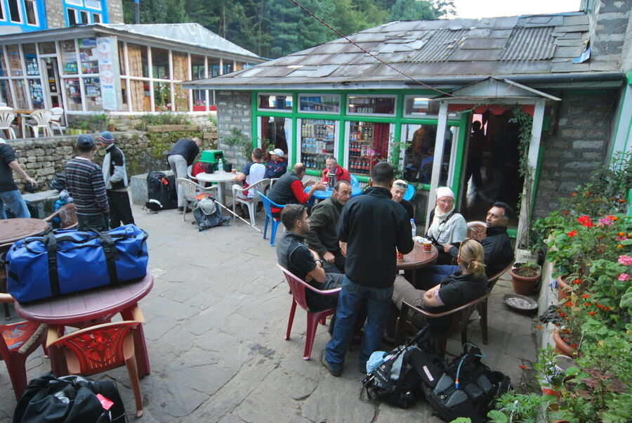
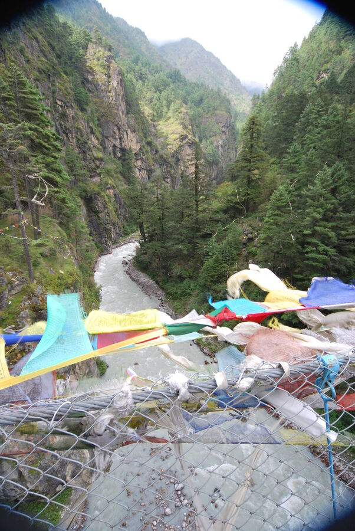
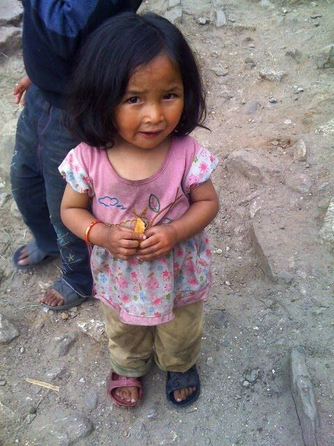
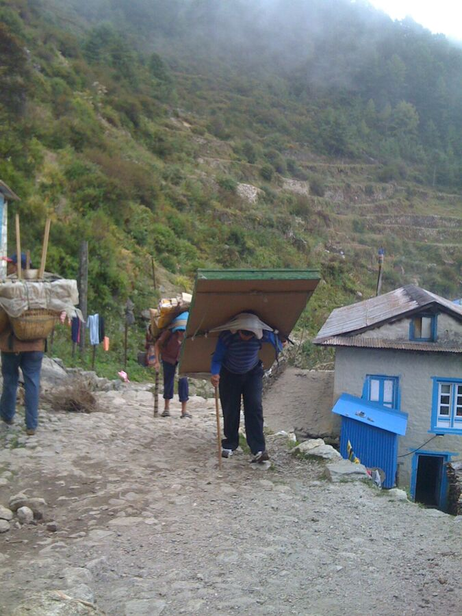
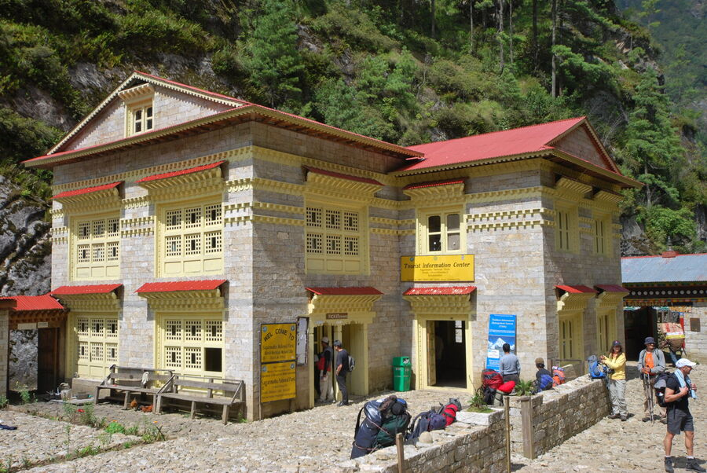
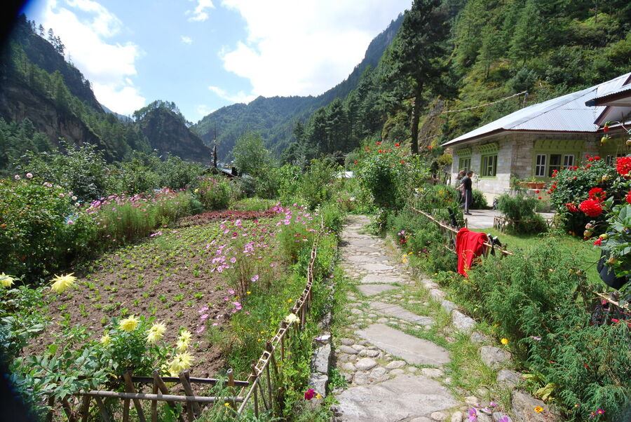
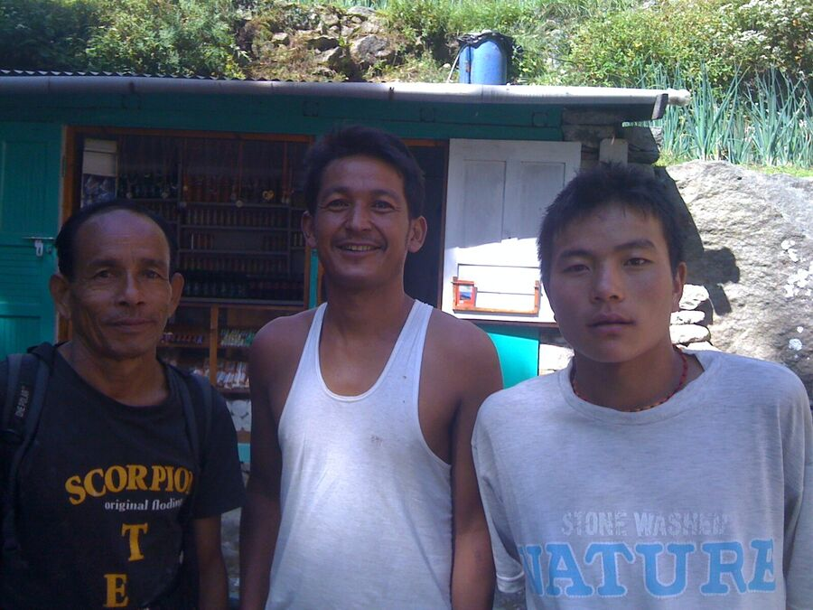
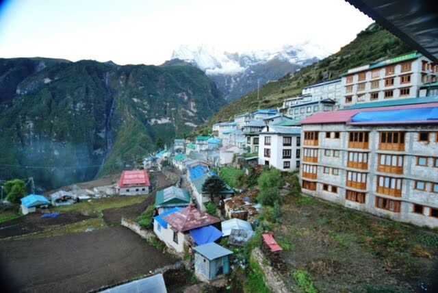
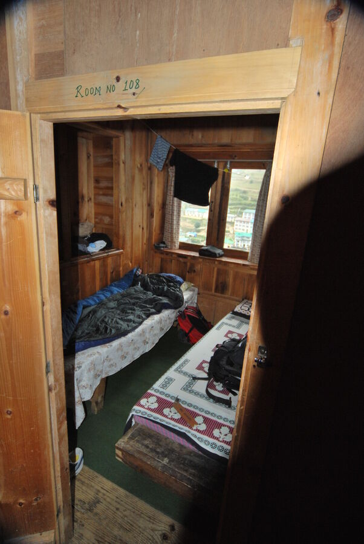
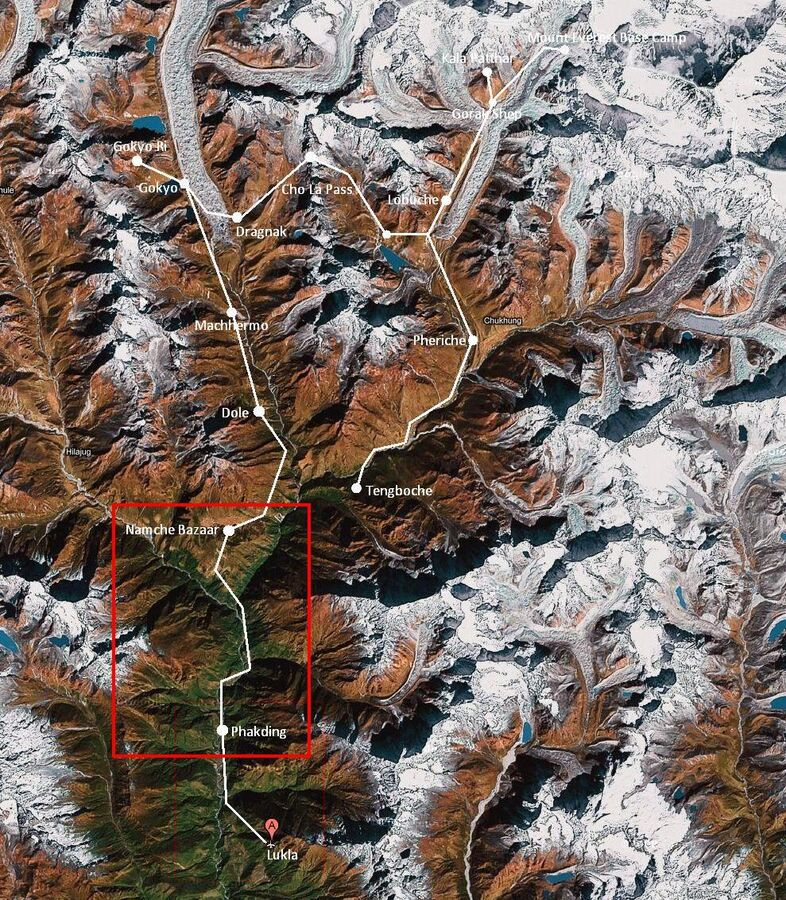

Der erste richtige Trekkingtag begann mit einer mehr-oder weniger kalten Katzenwäsche. Im Hof der Lodge - also draußen - befindet sich die einzige Waschstelle. Zum Glück ist es im September noch einigermaßen erträglich - ich frage mich nur, wie die Trekker das dann im Winter machen. Zugegebenermaßen hat man vom Waschplatz einen ziemlich beeindruckenden Blick auf ein Bergmassiv. Da putzt man sich auch schon mal wirklich 3 Minuten lang die Zähne. Nach dem Waschen, Anziehen und Seesack packen ging es zum Frühstück. Noch laufen wir zusammen mit den anderen Gruppen, denn der Weg bis Namche Bazar ist für alle eigentlich gleich. Erst dann trennen sich die Wege.

Heute war erwartungsgemäß mit einem Netto-Aufstieg von 800 Höhenmetern zum Zielort Namche Bazar ein schwerer Tag. Netto, weil - wie mir das bis heute selbst gar nicht bewusst war - man streckenweise hunderte Meter absteigt, um dann wieder aufzusteigen. Das ist sehr ernüchternd, denn der Aufstieg ist schon sehr kräftezehrend. Und wenn man dann einmal 100 Höhenmeter aufgestiegen ist und nach der nächsten Kurve wieder 80 Meter absteigt - was übrigens ebenso mühsam ist - dann ist das ärgerlich. Aber eigentlich ist so ein Streckenvrtlauf auch klar, weil wir ja Schluchten überqueren und nicht überall Hängebrücken sind.

Das ist das Stichwort: Hängebrücken. Tja, das wusste ich auch nicht, dass es solche hier gibt. Manche sind so hoch, dass selbst mir schwindelig wird. Es ist natürlich ein großer Spaß, über diese Stahlgebilde zu laufen und den reißenden Fluß unter sich zu betrachten. Aber wenn dann Wind aufkommt und die Brücke ein wenig schaukelt und evtl. noch ein Reiter, ein paar Rindviecher oder Sherpas mit Lasten entgegenkommen, dann wird einem schon mulmig.
Da es warm und sonnig war, ging ich mit T-Shirt und Cappy sowie langer Trekking-Hose (hab auch nur eine dabei). Außerdem haben wir uns heute die Stiefel angezogen, und das war wichtig.

Die erste Halbetappe führte wieder über steinige Wege an vielen Gasthäusern vorbei bergauf und bergab. Manchmal sind fast Stufen verbaut, allerdings aus ungleichen Felsstücken und nie mit gleicher Höhe. Das macht es schwer, einen Rhythmus beim Steigen zu finden. Den Aufstieg muss man sich wie eine lange, steile Treppe mit großen Stufen aus Felsstücken vorstellen. Aber jeder Tritt muss bedacht sein. Die Wege sind 1-4 Meter breit, an der Seite geht es durchaus steil nach unten, obwohl oftmals noch Bäume oder Sträucher dort wachsen. Die Vegetation ist sehr grün, überall gibt es Bäche, Blumen, Tiere. Alle paar Meter kommt ein Sherpa mit Lasten oder ein Wanderer vorbei.

Die Sherpas bekommen übrigens für so eine Etappe ca. 5 Rupien pro Kilo. Das sind ca. 5 Cent. 1 Liter Wasser in der PET-Flasche kostet 50-150 Rupien. Das mal zum Vergleich. Die Sherpas - leider oft auch Kinder - tragen unheimliche Lasten. Unvorstellbar. Und sie laufen mit Badelatschen oder Turnschuhen - sicher auch, weil richtige Trekkingschuhe für sie nicht erschwinglich sind.

Bei Tawa betraten wir heute den Sagarmatha National Park, der der Mount Everest heißt eigentlich Sagarmathe. Die ganze Region ist ein Naturschutzgebiet und ist entsprechend geschützt. Im Khumbu gibt es übrigens 3 Achttausender: Den Mount Everest (8.848m), den Lhotse (8.516m) und den Cho Oyu (8.201m). Für den Eintritt in den Nationalpark benötigt man ein Formular mit Foto. Zwischendurch gibt es Kontrollposten, die man passiert. Wenn ich es richtig verstanden habe, können die Behörden so auch feststellen, ob Wanderer vermisst werden - auf jeden Fall haben wir Vermisstenplakate gesehen.

Das Mittagessen nahmen wir in einem netten Gästehaus mit einem schönen Blumengarten ein. Eigentlich gibt es immer das gleiche zur Auswahl: Gebratener Reis oder Nudeln mit Gemüse und/oder Fleisch, Spaghetti, Sandwiches, Pizza, Fleischgerichte, Salate etc. Vor dem Verzehr von Fleisch hatte man uns abgeraten, da dort oben nicht geschlachtet wird und alles stundenlang hochgetragen werden muss. Eine richtige Kühlkette ist insofern nicht möglich. Und Salate und rohes Obst ist eh tabu. Ich esse hier hauptsächlich viel Reis oder Nudeln, um genug Kohlehydrathe aufzunehmen. Man verbrennt unheimlich viel.
Wir trinken auch viel. 4-5 Liter sind Pflicht, weil man sehr viel schwitzt. Aber man braucht die Flüssigkeit auch deshalb, weil sich das Blut verdünnt, je höher wir kommen. Es hilft gegen Dehydration und Kopfschmerzen.
Kopfschmerzen können durch den Wind und den verändeten Luftdruck kommen. Sie können aber auch Anzeichen für eine beginnende Höhenkrankheit sein. Und die kann ganz schnell tödlich enden. Zwar gibt es Medikamente gegen die Scmerzen, aber eigentlich hilft nur eins: Unverzüglich absteigen. Nur das geht halt nicht immer, vor allem Nachts. Und Helikopter kommen nicht immer so schnell zu der Notstelle oder witterungsbedingt auch gar nicht. Einige aus der Gruppe haben schon leichte Kopfschmerzen, da hilft am besten Aspirin - auch schon alleine wegen des blutverdünnenden Effektes. Ich habe zum Glück noch nichts. Trotzdem merken wir, dass das Atmen schwerer fällt und man schneller aus der Puste ist.

Nach der Mittagspause kam dann der schwierigste Teil. Es war ein sehr langer Anstieg, fast 3 Stunden am Stück. Leider hatte uns der Führer Ram (s. Foto, Mitte) versäumt zu sagen, dass - anders als bisher - bis zum Ziel kein Wasser mehr erhältlich sein würde, so dass wir nach kurzem schon nichts mehr zu trinken hatten. Und das war fatal. Ram ließ dann vom Zielpunkt aus jemanden mit Wasser uns entgegenkommen. Danach ging es wieder besser.

Nach 7-8 Stunden - ich weiß das gar nicht so genau - erreichten wir dann das Ziel, Namche Bazar (3.450m). Dies ist ein etwas größerer Ort mit Internet Cafes, Geldautomat und Geschäften. Es ist auch der einzige in der Region, der so groß ist, wer also Geld braucht, der solle es hier noch tauschen (Tipp!). Von hier aus beginnt die eigentliche "Runde". Hier werden wir auf dem Rückweg wieder vorbeikommen und die gleiche Strecke bis zum Ausganfspunkt Lukla gehen.
Als wir eintrafen, lag der Ort, der an einem Hang liegt und sich sicher über schätzungsweise 50-100 Höhenmeter erschreckt, bereits teilweise in einer Wolke. Es war schattig und klam. Bereits bei unserem Anstieg während der zweiten Halbetappe war es kühl geworden und wir hatten die Wolkengrenze erreicht.

Unsere Lodge in Namche Bazar befindet sich oberhalb des Ortes und ist mal wieder äußerst simpel: Die Räume sind Bretterverschläge aus Spanholz, ungepflegte WCs auf dem Gang, kalte und zugige Dusche über den Hof. Der Gastraum ist zwar schön mit einem tollen Blick auf Namche Bazar und das Essen und der Tee durchaus schmackhaft, aber es gibt eine Alternative: Stefan, ein Mitwanderer aus einer anderen Gruppe, kam zu uns und erzählte von seiner Herberge im Ort unterhalb unserer Lodge, in der er und seine Frau Sandra wohnten. So wechselten Ralf und ich heute in dieses andere Quartier, zumal wir morgen ohnehin einen Akklimatisierungstag haben und demnach länger vor Ort sind. Alexander aus unserer Gruppe wollte nicht wechseln, Harald wäre gerne mitgekommen, wollte dann aber Alexander nicht alleine lassen. So ist unsere kleine Gruppe jetzt geteilt, was sicherlich nicht gerade schön ist, andererseits müssen wir auch sehr vorsichtig mit unserer Gesundheit sein. Und wenn sich die Gelegenheit bietet, in einem sauberen, nicht zugigen Zimmer mit Bett, eigener Dusche und eigenem WC zu wohnen, dann muss man das u.E. auf jeden Fall tun. Denn das ganze ist sehr kräftezehrend und jeder Virus und jedes Bakterium freut sich auf einen geschwächten Körper. Und die Mehrkosten fallen mit rd. 5€ pro Person pro Nacht nicht ins Gewicht, zumal man in der einfachen Lodge fürs Duschen noch einmal 3€ extra bezahlen muss. Und für 1 Stunde Akku aufladen je 1€. Das haben wir in der anderen Lodge alles inklusive. Leider werden wir wohl nach Namche Bazar keine besseren Lodges mehr vorfinden.
Der Tag war also geprägt von Anstrengung, aber auch sehr schönen Momenten. Langsam nehmen wir den Rhythmus von Nepal auf.
